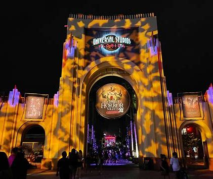
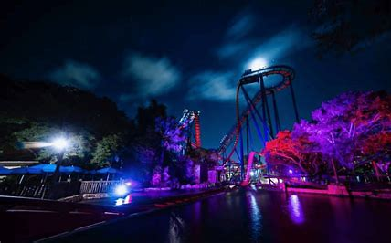

Halloween Horror Nights for 2024 was a massive success. There were many positive reviews showcasing the significant scare zones and houses.
Some of these include: Goblin Feast, A Quiet Place, and Triplets of Terror.

Busch Gardens has not necessarily been the best for Howl-O-Scream. There has been a downword trend of reviews even since the pandemic
negatively affected their halloween themed event. Perhaps their best options would be to prepare for Christmas Town.